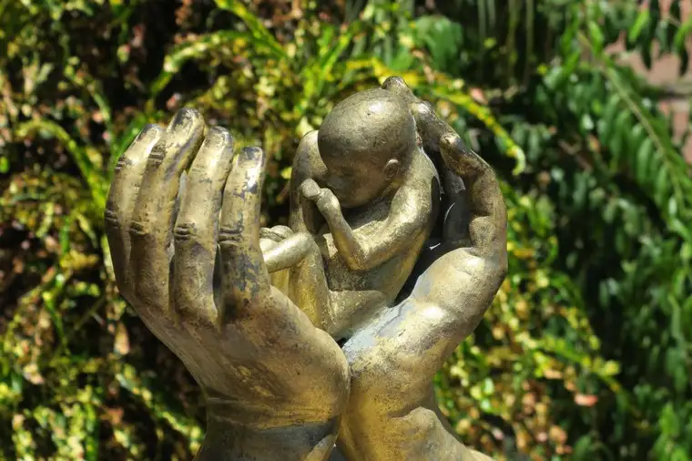

Some readers may have heard that, on May 11, I was punched on the side of my head while praying at our state’s only abortion facility, and suffered a mild concussion.
For those who knew, thanks for the prayers. Despite discomfort for a few days, I have healed. The emotional effects were much harsher than any physical pain, for I felt the punch symbolically; it epitomizes the violence of abortion that has deeply hurt so many.
Police are continuing their investigation to locate the perpetrator, who fled before identifying information could be obtained. The incident was caught on video by the Red River Women’s Clinic. Though the facility initially refused to release it, it’s now in police hands.
I harbor no ill will for the young lady who did this. She was in distress, I knew, having heard her mention to an escort about a domestic abuse situation. Just minutes before she lunged toward me, I’d tried offering her information I hoped would lead her to help and safety.
But it seemed like she just wanted to hit something, and I just happened to be an easy target. Though I believe it would be good for her to face her actions—both to signal to others that it’s not okay to assault people, and for her own ultimate good—above all, I want to know she’s okay, and for her to know she’s loved by a good God.
But to the main point now. Two Wednesdays after that incident, after skipping a week of sidewalk prayer for another commitment, I was readying to return when I got a text from a fellow advocate: “There are maybe two workers inside, no rainbow (escort) vests, no abortions today, six former escorts eating at JL Beers.”
I had just come out of Mass and was shocked. What could be going on? “Are they plotting their move to Minnesota?” I texted back. “Most likely,” he responded.
Of course, we can only assume why abortions were seemingly shut down that day. Maybe they’d switched to another day. Or perhaps they were discussing the possible overturning of Roe v. Wade, and how that would effectively eliminate abortion in our state, causing their regular business to be illegal.
My friend asked if I’d still be willing to show up to keep company with our friend Nick, who had committed to remaining there with his sign encouraging life through the afternoon.
So, I showed up to the sidewalk anyway that day, and instead of an emotional hour or two of trying to let women know of life-giving help, we just talked—to one another, and some of the people walking past. One young man, a now-unvested escort, booed us and told us—twice—he was a former member of the Knights of Columbus.
It was the next character, however, that drew us in. He was an older man, and seemed to have had a few alcoholic drinks in his system. He paused before the Kopelman building, where abortions are performed, and said, pointing, “I used to live there,” noting that, years ago, the building had housed a different business, and upstairs, some apartments.
He was clearly unhappy with its current use. “I don’t like it,” he said. “I once had a breakup over (an abortion).” As he continued, tears formed in his eyes. “I wanted the baby. She didn’t. I wanted to be a dad.”
The truth always bursts forth on the sidewalk—the truth of the devastation of abortion.
It was years ago, he’d indicated, but he was clearly not over the death of his child. It was his only chance, he said, now forever gone. He’d been robbed of fatherhood. With the wound now exposed, he began weeping.
“But you are a father,” I assured him, adding that, through a relationship with Christ, he would see his child someday.
Minutes after the man shuffled off with his broken heart, Nick turned to me, “Well now you know why you showed up today. I think you were meant to be here and see that.”
It’s all so sad—though that’s such an inadequate word. But we are hopeful; hopeful about North Dakota being among the collection of projected abortion-free states in our nation soon.
When that day comes, we will celebrate, but we will not toss our signs and brochures. Instead, we will simply follow the facility to its likely new home across the river in Minnesota, picking up our cause there, and doing whatever we can to breach that glaring gap between life and death.
Will North Dakota soon be abortion-free? If so, that jarring punch suddenly seems a small price to pay.
[Note: I write about my experiences on the sidewalk Downtown Fargo on Wednesday, the day abortions happen at our state’s only abortion facility, for New Earth magazine — the official news publication of the Fargo Diocese. I hope you find “Sidewalk Stories” helpful in understanding the truth about abortion and how it plays out tragically each week here in Fargo, N.D. The preceding ran in New Earth’s June 2022 issue.]